File: 000930.gt.txt (if the image is defective, simply delete all Arabic text and the line will be excluded)
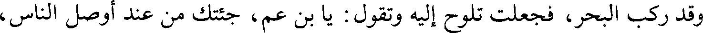
وقد ركب البحر، فجعلت تلوح إليه وتقول : يا بن عم، جئتك من عند أوصل الناس،
File: 000931.gt.txt (if the image is defective, simply delete all Arabic text and the line will be excluded)
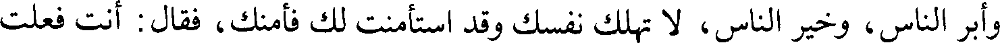
وأبر الناس، وخير الناس، لا تهلك نفسك وقد استأمنت لك فأمنك، فقال : أنت فعلت
File: 000932.gt.txt (if the image is defective, simply delete all Arabic text and the line will be excluded)
ذلك؟ قالت : نعم، أنا كلمته فأمنك، فرجع معها، فلما دنا من مكة قال رسول الله صلعم
File: 000933.gt.txt (if the image is defective, simply delete all Arabic text and the line will be excluded)
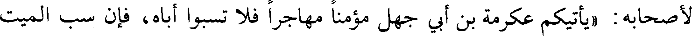
لأصحابه : «يأتيكم عكرمة بن أبي جهل مؤمنا مهاجرا فلا تسبوا أباه، فإن سب الميت
File: 000934.gt.txt (if the image is defective, simply delete all Arabic text and the line will be excluded)
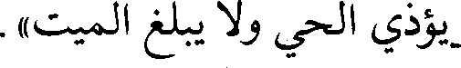
يؤذي الحي ولا يبلغ الميت».
File: 000935.gt.txt (if the image is defective, simply delete all Arabic text and the line will be excluded)
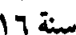
سنة 16
File: 000936.gt.txt (if the image is defective, simply delete all Arabic text and the line will be excluded)
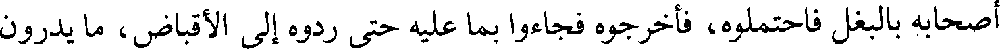
أصحابه بالبغل فاحتملوه، فأخرجوه فجاءوا بما عليه حتى ردوه إلى الأقباض، ما يدرون
File: 000937.gt.txt (if the image is defective, simply delete all Arabic text and the line will be excluded)
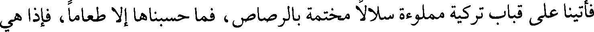
فأتينا على قباب تركية مملوءة سلالا مختمة بالرصاص، فما حسبناها إلا طعاما، فإذا هي
File: 000938.gt.txt (if the image is defective, simply delete all Arabic text and the line will be excluded)
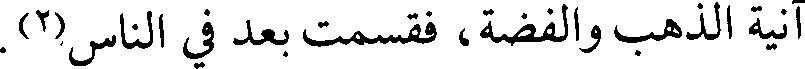
آنية الذهب والفضة، فقسمت بعد في الناس(2).
File: 000939.gt.txt (if the image is defective, simply delete all Arabic text and the line will be excluded)
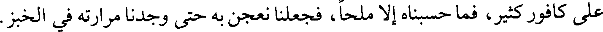
على كافور كثير، فما حسبناه إلا ملحا، فجعلنا نعجن به حتى وجدنا مرارته في الخبز.
File: 000940.gt.txt (if the image is defective, simply delete all Arabic text and the line will be excluded)
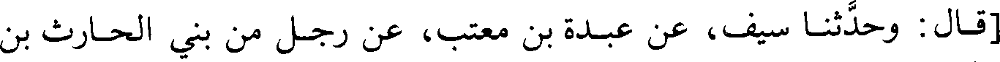
[قال : وحدثنا سيف، عن عبدة بن معتب، عن رجل من بني الحارث بن
File: 000941.gt.txt (if the image is defective, simply delete all Arabic text and the line will be excluded)
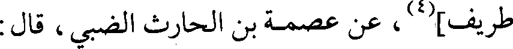
طريف](4)، عن عصمة بن الحارث الضبي، قال :
File: 000942.gt.txt (if the image is defective, simply delete all Arabic text and the line will be excluded)
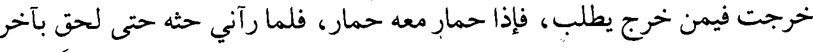
خرجت فيمن خرج يطلب، فإذا حمار معه حمار، فلما رآني حثه حتى لحق بآخر
File: 000943.gt.txt (if the image is defective, simply delete all Arabic text and the line will be excluded)
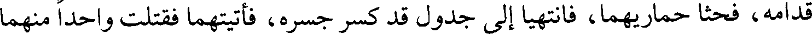
قدامه، فحثا حماريهما، فانتهيا إلى جدول قد كسر جسره، فأتيتهما فقتلت واحدا منهما
File: 000944.gt.txt (if the image is defective, simply delete all Arabic text and the line will be excluded)
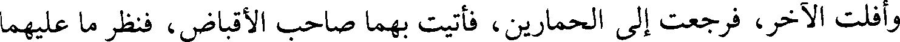
وأفلت الآخر، فرجعت إلى الحمارين، فأتيت بهما صاحب الأقباض، فنظر ما عليهما
File: 000945.gt.txt (if the image is defective, simply delete all Arabic text and the line will be excluded)
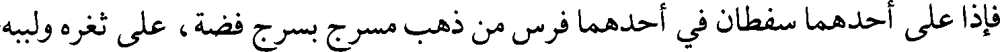
فإذا على أحدهما سفطان في أحدهما فرس من ذهب مسرج بسرج فضة، على ثغره ولببه
File: 000946.gt.txt (if the image is defective, simply delete all Arabic text and the line will be excluded)
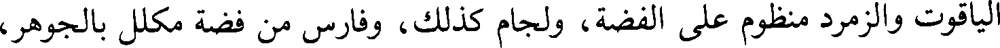
الياقوت والزمرد منظوم على الفضة، ولجام كذلك، وفارس من فضة مكلل بالجوهر،
File: 000947.gt.txt (if the image is defective, simply delete all Arabic text and the line will be excluded)
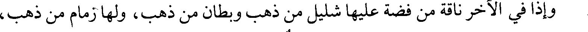
وإذا في الآخر ناقة من فضة عليها شليل من ذهب وبطان من ذهب، ولها زمام من ذهب،
File: 000948.gt.txt (if the image is defective, simply delete all Arabic text and the line will be excluded)
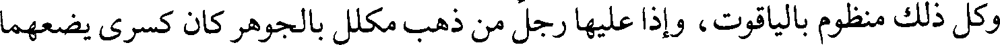
وكل ذلك منظوم بالياقوت، وإذا عليها رجل من ذهب مكلل بالجوهر كان كسرى يضعهما
File: 000949.gt.txt (if the image is defective, simply delete all Arabic text and the line will be excluded)
على أسطوانة التاج.
File: 000950.gt.txt (if the image is defective, simply delete all Arabic text and the line will be excluded)
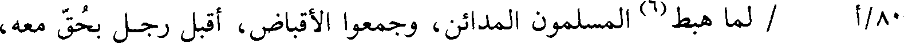
80/أ / لما هبط(6) المسلمون المدائن، وجمعوا الأقباض، أقبل رجل بحق معه،
File: 000951.gt.txt (if the image is defective, simply delete all Arabic text and the line will be excluded)
193
File: 000952.gt.txt (if the image is defective, simply delete all Arabic text and the line will be excluded)
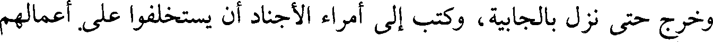
وخرج حتى نزل بالجابية، وكتب إلى أمراء الأجناد أن يستخلفوا على أعمالهم
File: 000953.gt.txt (if the image is defective, simply delete all Arabic text and the line will be excluded)
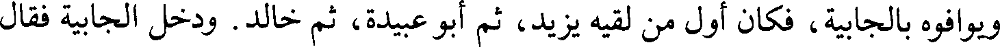
ويوافوه بالجابية، فكان أول من لقيه يزيد، ثم أبو عبيدة، ثم خالد. ودخل الجابية فقال
File: 000954.gt.txt (if the image is defective, simply delete all Arabic text and the line will be excluded)
رجل من يهود دمشق : السلام عليك يا فاروق، أنت والله صاحب أيلة، لا والله لا ترجع
File: 000955.gt.txt (if the image is defective, simply delete all Arabic text and the line will be excluded)
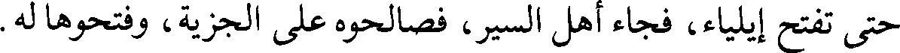
حتى تفتح إيلياء، فجاء أهل السير، فصالحوه على الجزية، وفتحوها له.
File: 000956.gt.txt (if the image is defective, simply delete all Arabic text and the line will be excluded)
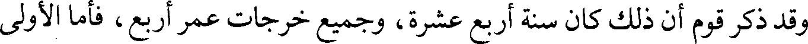
وقد ذكر قوم أن ذلك كان سنة أربع عشرة، وجميع خرجات عمر أربع، فأما الأولى
File: 000957.gt.txt (if the image is defective, simply delete all Arabic text and the line will be excluded)
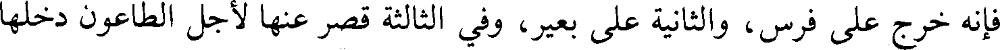
فإنه خرج على فرس، والثانية على بعير، وفي الثالثة قصر عنها لأجل الطاعون دخلها
File: 000958.gt.txt (if the image is defective, simply delete all Arabic text and the line will be excluded)
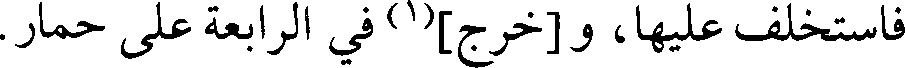
فاستخلف عليها، و [خرج](1) في الرابعة على حمار.
File: 000959.gt.txt (if the image is defective, simply delete all Arabic text and the line will be excluded)
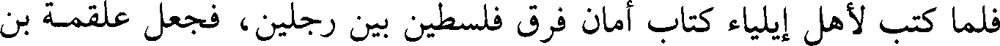
فلما كتب لأهل إيلياء كتاب أمان فرق فلسطين بين رجلين، فجعل علقمة بن
To Save: `Ctrl+s`, make sure to choose `Webpage, complete`!